Префектура Ибараки · Нака · пиво
Hitachino Nest: пиво с совой из сакэварни в Наке, которое пьют больше чем в 30 странах
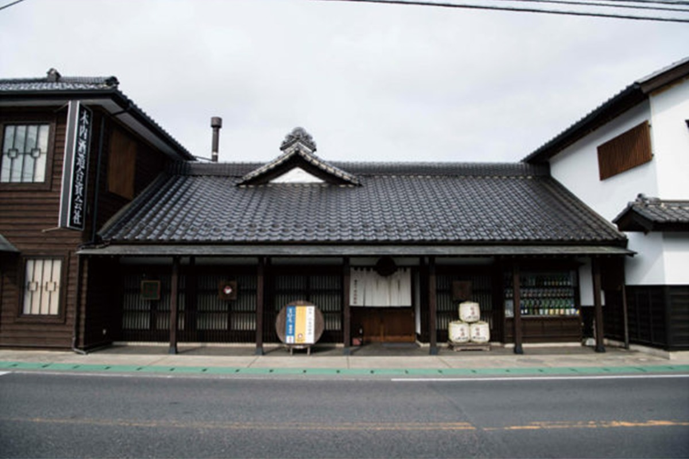
Сову на этикетке Hitachino Nest узнают даже в Нью-Йорке, а родом это пиво из старой сакэварни в городе Нака в префектуре Ибараки. Здесь варят пиво из своего ячменя, пробуют растить хмель и разрешают любому гостю сварить собственное пиво.
История
Сакэварня, которая взялась за пиво
Kiuchi Brewery основали около 1823 года, и больше полутора веков она была сакэварней. Свою главную марку сакэ здесь варят с самого основания, позже к ней добавились сётю и вино. В 1996 году сакэварня решила варить ещё и пиво. Оборудование заказали в Канаде, а образцом выбрали настоящий европейский эль.
Начинали вслепую, но уже через год, в 1997 году, Amber Ale получил золото в категории тёмного эля на международном пивном конкурсе. Потом награды пошли одна за другой: в 1998 году золото взял White Ale, а на World Beer Cup, крупнейшем пивном конкурсе мира, Extra High получил серебро. В 2000 и 2004 годах White Ale дважды выиграл там золото в категории пива с травами и пряностями.
После первых наград о пивоварне заговорили по всему миру, и в 1999 году начался экспорт. К 2020 году Hitachino Nest продавали больше чем в 30 странах, и за рубежом его пили едва ли не больше, чем в Японии. В Нью-Йорке по улицам даже ездил грузовик с совой на борту.
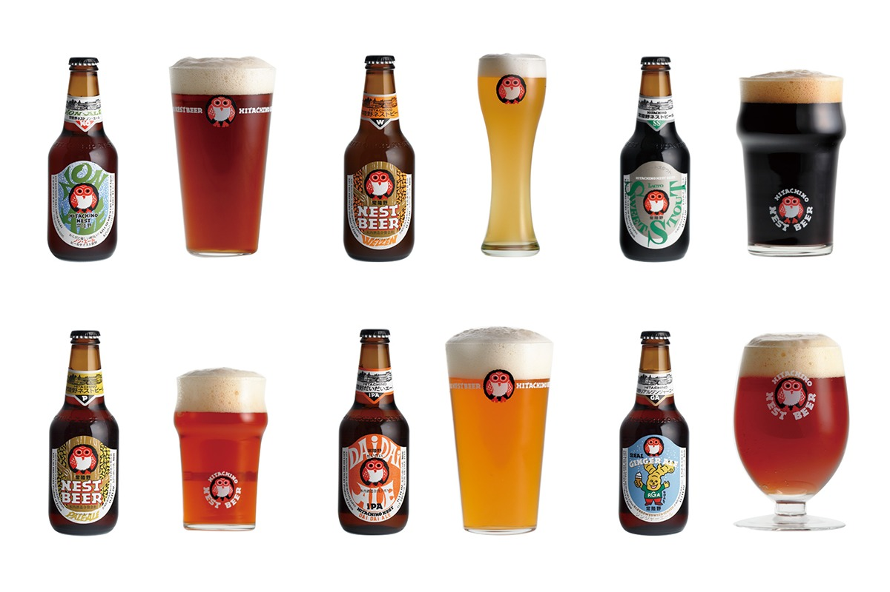
Поначалу пивовары стремились повторить европейский эль, а со временем их целью стало пиво, сделанное в Японии и только здесь возможное. Ячмень, хмель и добавки они стараются брать местные, чтобы спорить с лучшими пивоварнями мира своим, японским вкусом.
Вкус
Пиво с юдзу, красным рисом и рисовым кодзи
Самое известное пиво марки это White Ale, пшеничный бельгийский эль с кориандром, мускатным орехом, апельсиновой цедрой и апельсиновым соком. Он мягкий, с травянистым свежим ароматом, 5,5% алкоголя, бутылка 330 мл стоила 400 иен в 2020 году. Рядом с ним Lager, лёгкий и гладкий, с мягким хмелем, за 410 иен в 2020 году.
Японский характер ярче всего виден в сортах с местным сырьём. Nipponia варят из «Канэко Голден», старого сорта пивного ячменя, выведенного в Японии, и хмеля «Сорати Эйс», выращенного в Японии: у этого золотого эля крепостью 8% цитрусовый аромат и долгое послевкусие (810 иен за 550 мл в 2020 году). Для Dai Dai Ale берут мандарины «фукурай-микан», которые собирают в Ясато у подножия горы Цукуба, и цитрусовый хмель.
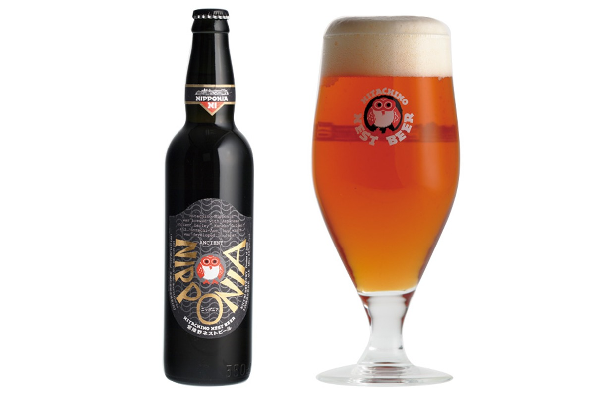
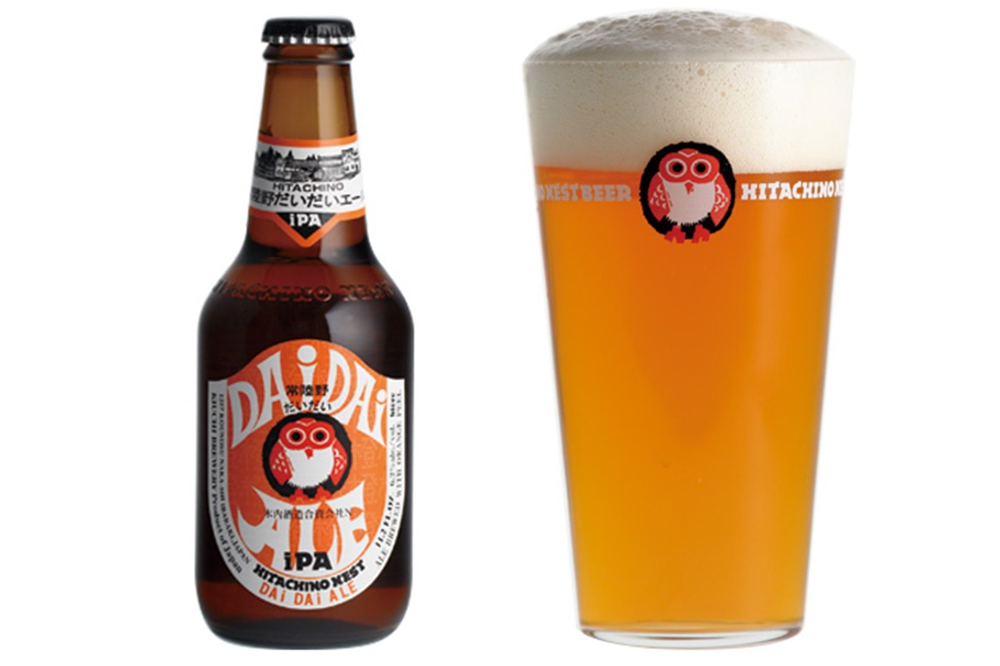
В Saison du Japon добавлен рисовый кодзи, без которого не бывает сакэ, а для аромата сок юдзу: у пива рисовая сладость и мягкая кислинка брожения. Red Rice Ale окрашен в бледно-розовый цвет старинным красным рисом и пахнет спелыми фруктами. Japanese Classic Ale бродит в деревянных бочках: пивовары вдохновлялись тем, как варили первое пиво в Японии в эпоху Эдо, и щедро добавили хмеля.
Остальные сорта ближе к мировой классике, но у каждого свой характер. В Espresso Stout кладут кофе глубокой обжарки, у Weizen банановый аромат и почти нет горечи, Extra High долго выдерживают с большим количеством хмеля. Real Ginger Ale крепостью 8% делают с имбирём из префектуры Коти, а Non-Ale почти без алкоголя, 0,3%. В 2020 году бутылка 330 мл большинства сортов стоила от 410 до 486 иен.
Этикетка
Откуда взялась сова
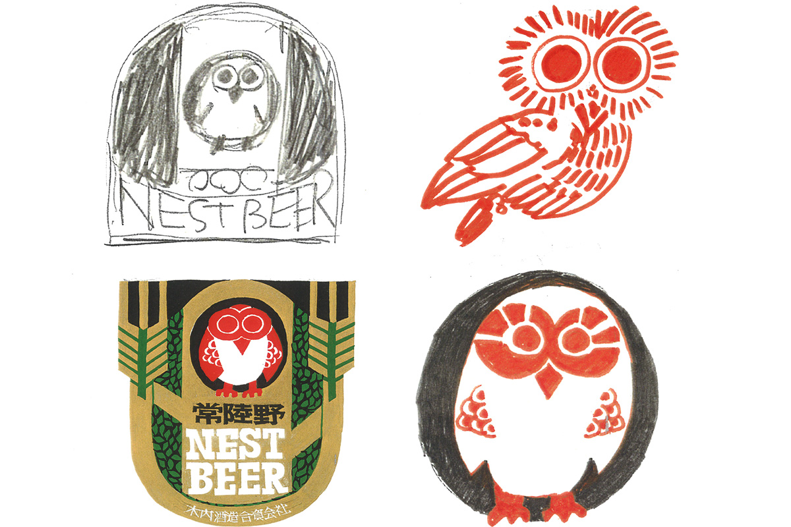
Сову для этикетки придумал дизайнер, которого уже нет в живых. Сакэварня стоит в квартале Коносу, а «су» по-японски значит «гнездо», по-английски nest: отсюда и название, пиво как птица, вылетевшая из гнезда. Среди кандидатов на эмблему были и местные знаменитости: рыба удильщик, которой славится Ибараки, и аист. Над дизайном этикеток вообще работала компания любителей выпить, среди них керамисты и архитекторы.
Пивоварня
Чистый вкус, где бы его ни пили
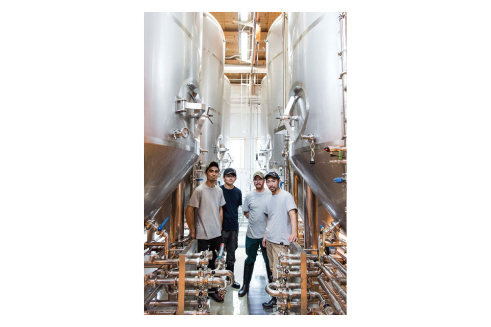
С каждым годом пива нужно больше, но объёмы здесь наращивают без спешки. Главная цель в том, чтобы пиво было вкусным в любой точке мира, поэтому за температурой следят на всех этапах. Санитарные проверки и анализы на окисление пивоварня проводит на уровне крупных производителей и изучает данные за 15 лет, чтобы улучшать качество.
«Даже если получил награду и стал знаменит, нельзя делать то, что не порадует человека, который это пьёт. Мы хотим, чтобы наше пиво было вкусным для всех»
главный пивовар
Под климат страны, куда уходит партия, меняют дрожжи и способ брожения: в холодном и жарком краю пиво живёт по-разному. По словам главного пивовара, цель в том, чтобы у пива не было резкого привкуса, оно было мягким и не теряло аромата: девиз пивоварни «чистота».
Путь от зерна до бутылки здесь такой. Солод взвешивают и дробят, около трёх часов держат в горячей воде, чтобы крахмал превратился в сахар, затем долго фильтруют. Сусло около двух часов кипятят, добавляя хмель в несколько приёмов, и в вихревом чане отделяют осадок. Охлаждённое сусло получает нужные дрожжи, бродит и созревает. Всё, кроме мутных сортов вроде вайценбира, осветляют в центрифуге, разливают по бутылкам без доступа воздуха и наклеивают этикетки. Работают машины, но в конце каждую партию глазами проверяет пивовар.
Поле
Свой ячмень и свой хмель
Почти всё японское пиво варят из привозного сырья. Ячмень трудно растить в холодном климате, и урожай у него нестабильный, хмель болеет и тоже капризен. Пивовары Hitachino Nest всё равно решили растить сырьё сами.
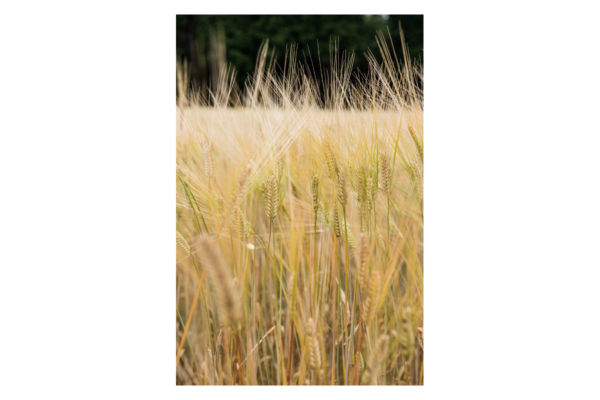
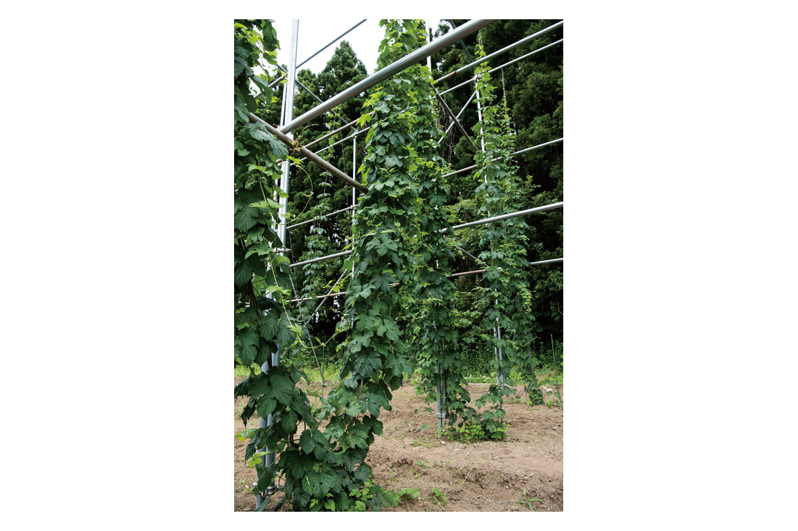
К 2020 году сакэварня уже около десяти лет выращивала ячмень и пшеницу на своём поле, которое распахали на месте заброшенной пашни. Здесь удалось возродить «Канэко Голден», сорт, считавшийся исчезнувшим. После уборки ячменя на том же поле сеют гречиху, и урожай растёт год от года. Хмель в 2020 году, по словам пивоваров, был ещё на стадии опытов, но «Наггет» и «Каскад» уже прижились.
Варить из своего сырья тоже непросто: ячмень надо превратить в солод, а свежий хмель быстро портится. Купить стабильное зарубежное сырьё было бы надёжнее, но в сакэварне уверены, что выходить на мировой рынок имеет смысл только с пивом, сделанным в Японии от начала до конца.
Мастерская
Сварить своё пиво
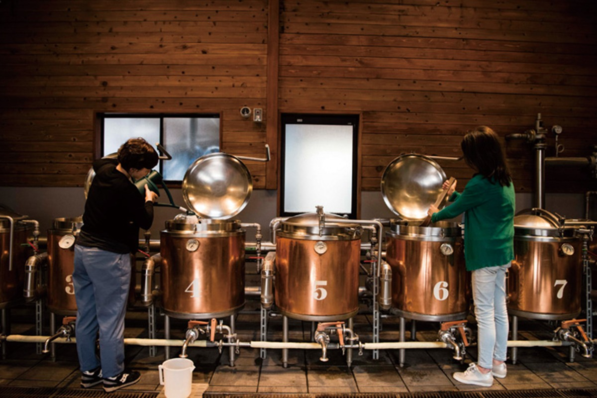
При сакэварне работает мастерская, где любой может сварить собственное пиво, только по предварительной записи. Сначала выбирают солод под нужный стиль, от белого эля до стаута. Потом из десятка сортов хмеля подбирают горечь и аромат, а в конце добавки: кориандр, апельсиновую цедру или что-то своё, принесённое с собой. Этикетку тоже можно сделать собственную, со своей фотографией или рисунком.
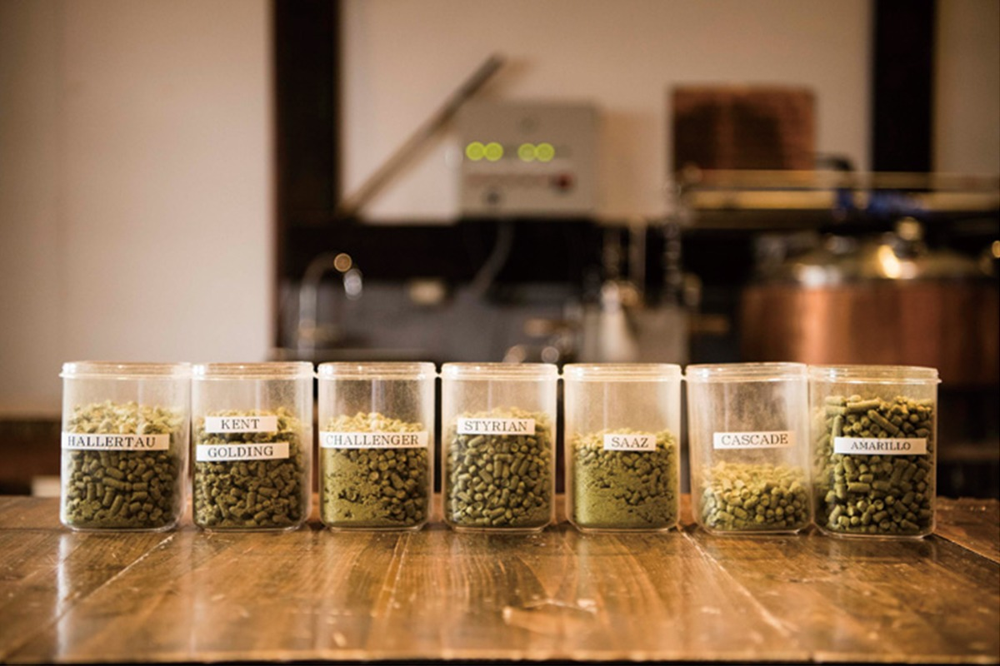
В 2020 году гостей мастерской кормили обедом, который больше нигде не подают: сэндвичем со скумбрией из Ибараки, приготовленной в маринаде эскабече.
Kiuchi Brewery, главный дом и мастерская
- Адрес
- префектура Ибараки, Нака, Коносу, 1257
- Телефон
- +81 29-298-0105
Где выпить
Бар в Мито и лапша на сакэ
Попробовать пиво можно и в Мито, в здании вокзала. Здесь наливают Hitachino Nest, а заодно сакэ, вино, сливовое вино умэсю и сётю Kiuchi Brewery. Фирменное блюдо заведения это бургер. В 2020 году бар назывался true brew, позже он стал Hitachino Brewing Mito.
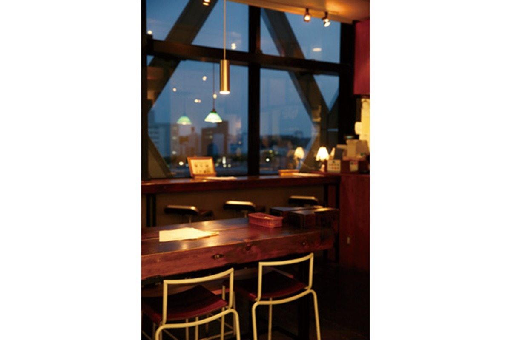
Hitachino Brewing Mito
- Адрес
- префектура Ибараки, Мито, Миямати, 1-7-31, здание вокзала «Эксель Минами», 4-й этаж
- Телефон
- +81 29-306-7575
- Часы работы
- 11:00–22:00
- Выходные
- нет
Прямо на территории сакэварни работает лапшичная «Кура + соба Накая», которую открыли в 2005 году. Её гордость это лапша дзюварисоба из чистой гречки своего урожая: тесто для неё замешивают не на воде, а на одном сакэ. Есть и гречневая лапша с местными овощами, и закуски, а запивают всё, конечно, пивом или сакэ.
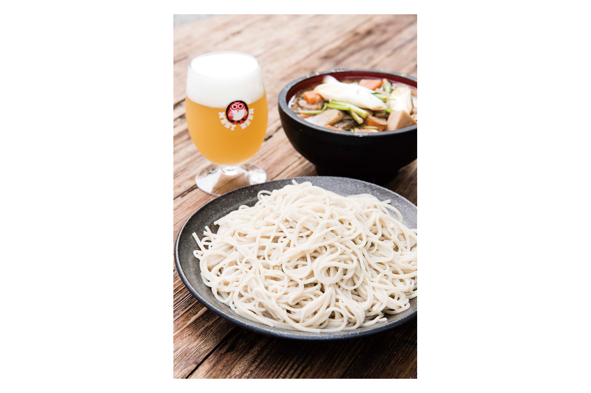
«Кура + соба Накая»
- Адрес
- префектура Ибараки, Нака, Коносу, 1257
- Телефон
- +81 29-298-0105
- Часы работы
- 11:30–14:30, 17:30–20:00 (последний заказ в 19:30); с понедельника по четверг 11:30–14:30
- Выходные
- нет
Фото: Ацуси Ямахира, Садаму Сайто.